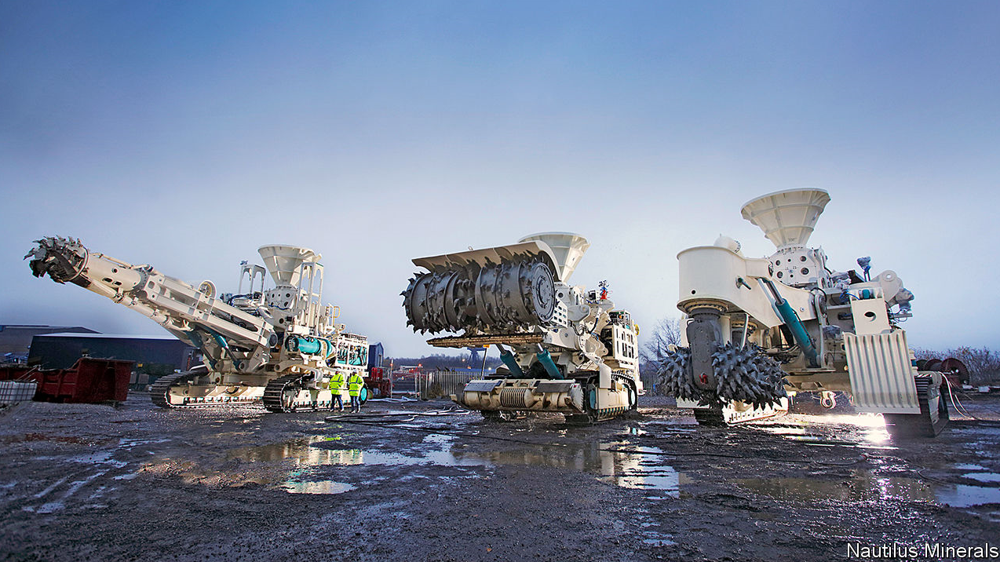

2021-02-03T11:00:56+00:00
经济学人视频
深海采矿：对地球的真实代价
采矿公司和政府机构很快将准许从深海海床开采矿物。这些稀有金属将有助于人类在陆地上的可持续生活，但海洋会付出怎样的代价？
2021-02-03T11:00:56+00:00
The Economist film
Mining the deep sea: the true cost to the planet
Mining companies and governments will soon be allowed to extract minerals from the deep-ocean floor. These rare metals are vital for a more environmentally sustainable future on land, but at what cost to the health of the ocean?
2021-02-03T11:00:56+00:00
經濟學人視頻
深海採礦：對地球的真實代價
採礦公司和政府機構很快將准許從深海海床開採礦物。這些稀有金屬將有助於人類在陸地上的可持續生活，但海洋會付出怎樣的代價？